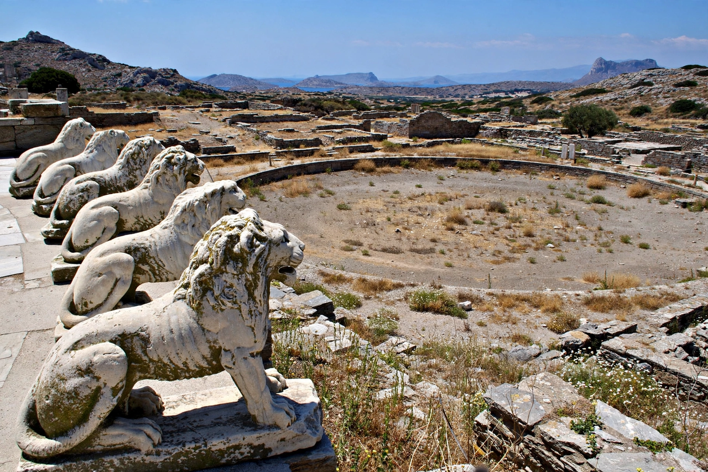

Delos
From Wikipedia, the free encyclopedia

Delos is a small, barren island in the Cyclades near Mykonos, one of the most important mythological, historical and archaeological sites in Greece. In myth the birthplace of Apollo and Artemis, it was a major pan-Hellenic sanctuary and, in the Hellenistic and Roman periods, a great commercial port and slave market. Abandoned since roughly the first century BC, the whole island is a UNESCO World Heritage Site — an open-air museum with no permanent population beyond guards and archaeologists.
Sanctuary and league
The sanctuary of Apollo drew pilgrims for a millennium; Athens purified the island twice (removing graves, then the population itself) and made it the treasury seat of the Delian League (478 BC) before removing the funds to Athens — a parable of empire. The Terrace of the Lions (c. 600 BC, a Naxian dedication) guarded the Sacred Lake, now drained.
Commercial heyday and decline
Declared a free port in 166 BC under Roman auspices, Delos exploded into a cosmopolitan emporium — its slave market, Strabo claims, could turn over 10,000 souls a day — with Italian, Syrian, Egyptian and Jewish merchant communities, their temples (including one of the oldest known synagogues) side by side. Mithridates' sack in 88 BC and pirates in 69 BC ended it; the ruins — mosaics, the House of Dionysus, theatre, agora — slept until French excavations began in 1873.